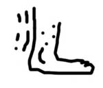

KANJIDAMAGE
Intro
Kanji facts
How to
Tags
Kanji
Radicals
Appendix
Onyomi
Ill pairs
Dupes
Articles
Long short vowlels
Synonyms
Forum
|
← Previous
Number 329
Next →
motion
(lower left radical)
PK
SYMBOLIC

VERY VERY SYMBOLIC RADICAL. -- almost all kanji which use this , have to do with motion in some way.
Used In
近
辺
迫
込
達
進
迷
遊
遺
透
適
返
遠
退
造
道
送
途
連
運
遭
逸
遂
速
通
避
迎
選
違
追
週
過
逃
逮
逆
巡
述
遅
 KANJIDAMAGE
KANJIDAMAGE
 Number
329
Number
329